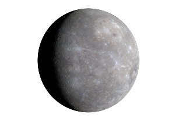

수성(Mercurius)
수성은 해가 진 직후 서쪽 하늘과, 해가 뜨기 직전 동쪽 하늘에서만 볼 수가 있다.
그리고 망원경으로 수성을 보면 달과 같이 그 위상이 변하는 것을 알 수 있다.
표면의 모습도 달과 매우 비슷하다.
수성에는 대기가 거의 존재하지 않고 매우 가벼운 가스층이 있다.
수성의 형성 초기에는 다른 행성과 마찬가지로 대기가 존재했을 것이라 생각되지만
중력이 작기 때문에 그 대부분이 우주로 날아갔을 것이다.
현재 수성의 대기는 다양한 방법에 의해 공급되고 있다.
태양풍에 포함된 수소와 헬륨은 수성의 자기장에 붙잡히고,
미세 운석의 충돌로 산소, 나트륨, 칼륨 등의 원자가 대지에서 증발되어 나온다.
1992년 레이더 관측에 의해 수성의 북극 부분에서 물과 얼음이 발견되었다.
이 얼음은 혜성의 충돌이나 수성 내부에서 방출되어 생긴 물이 1년 동안 태양광이 닿지
않는 극지방의 크레이터 바닥에 남겨져 있던 것이라 추측된다.